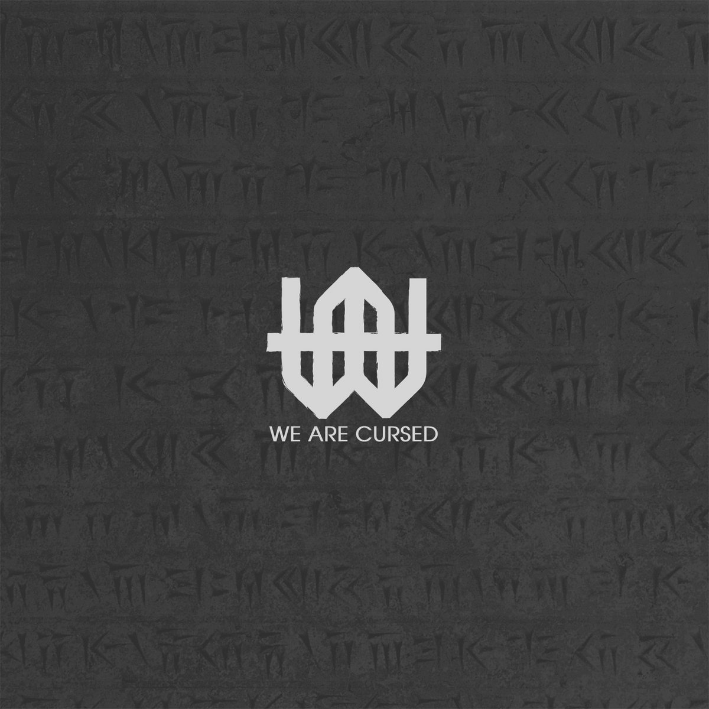
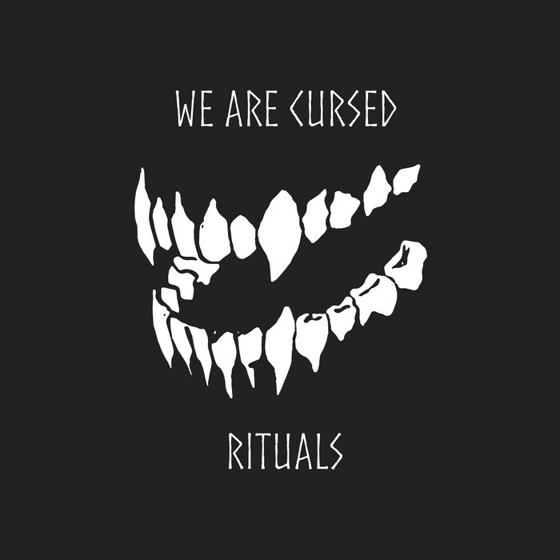

Benoît Pouzol
Live / FOH
Mixage façade, régie son, préparation technique et exploitation live. Expérience scène, tournée et systèmes de diffusion.
Studio / production
Enregistrement, production et mixage musical, avec une forte expérience rock, metal et musiques amplifiées.
Studio / production
Enregistrement, production et mixage musical, avec une forte expérience rock, metal et musiques amplifiées.




Voix off / Podcast
Enregistrement, édition et traitement de voix : intelligibilité, présence, stabilité et livraison rapide.
Mixage documentaire
Mix à l’image : dialogues, ambiances, musique, nettoyage audio et livrables propres pour diffusion.
À propos
Basé près d’Avignon, je travaille depuis plusieurs années entre le live, le studio et la post-production. Mon parcours croise la régie son, le mixage façade, la production musicale, la voix off et le mixage documentaire.
Formation
J’interviens également comme formateur audio : live, studio, routing, consoles numériques, workflow DAW, mixage et méthodes de travail professionnelles.